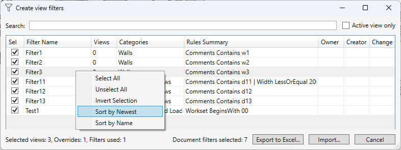
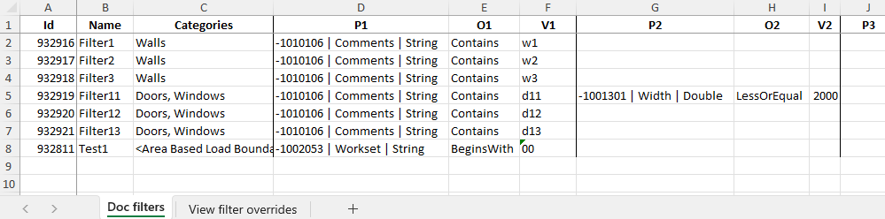
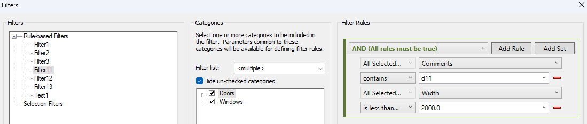
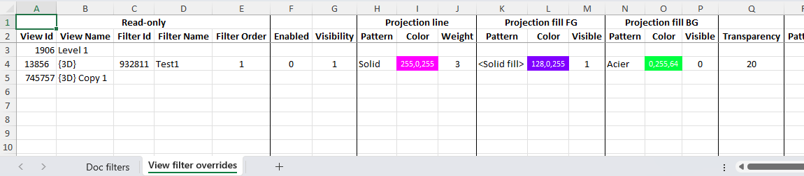
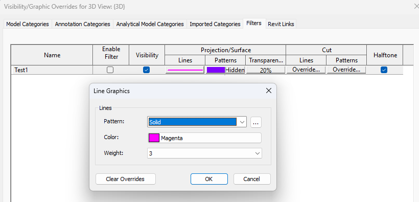

Filter Manager (Gestión de filtros)
Tabla de contenidos
El comando permite gestionar los filtros del proyecto y sus modificaciones gráficas en las vistas mediante Excel.
Exportación
- Seleccione las vistas deseadas en el navegador de proyectos. Si no hay vistas válidas seleccionadas, el comando utiliza la vista activa.
- Ejecute Create filters.
- Al abrir la ventana, se marcan todos los filtros de las vistas seleccionadas, excepto los filtros complejos anidados. Si las vistas no contienen filtros disponibles, se marcan todos los filtros disponibles del proyecto.
- Haga clic en Export to Excel y guarde el archivo.
Use las casillas para controlar qué filtros se exportan a la hoja
Doc filters. Los filtros de las vistas se exportan independientemente de las casillas marcadas.
En la parte inferior de la ventana se muestra el número de vistas seleccionadas antes de ejecutar el comando, sus modificaciones y filtros utilizados, así como el número de filtros del proyecto marcados.

Hojas de Excel
La exportación crea un libro con dos hojas:
Doc filters— nombres, categorías y reglas de los filtros del proyecto.View filter overrides— filtros de las vistas, su visibilidad y configuración gráfica.
Si una vista seleccionada no tiene filtros, se crea igualmente una fila con su ID y nombre para que pueda completarla más adelante.
Edición y creación de filtros
Modificar un filtro del proyecto
En la hoja Doc filters, modifique el nombre, las categorías o las reglas sin cambiar el ID. A diferencia de la creación de un filtro nuevo, la modificación requiere confirmación durante la importación. Esto ayuda a evitar actualizaciones accidentales si el modelo y una exportación antigua ya no coinciden.
Los valores numéricos de las reglas se exportan en las unidades del documento y se convierten de nuevo durante la importación.


Crear un filtro
- En la hoja
Doc filters, copie una fila adecuada. - Borre su ID e indique el nombre y las reglas.
- Para asignar el filtro a una vista, añada una fila en la hoja
View filter overrides: indique el ID de la vista y el nombre del filtro, y deje vacío el ID del filtro.
Los nombres de la hoja Doc filters deben ser únicos. Si un nombre nuevo ya existe en el proyecto, el comando ofrece una misma decisión para todos los conflictos: actualizar los filtros existentes, crear nuevos con sufijos incrementados o cancelar la importación. Si se eligen nombres nuevos, las filas de vistas correspondientes con el ID del filtro vacío se vinculan a los nuevos filtros.
Modificar la configuración en una vista
En la hoja View filter overrides, modifique la visibilidad, los colores, los patrones, los grosores de línea u otras opciones.
- Introduzca los colores como
R,G,B, por ejemplo255,0,0. El fondo de la celda es solo una referencia y no se importa. - Indique los patrones por su nombre.
- Una celda de color o patrón vacía restablece la modificación correspondiente.
- Introduzca los valores booleanos (sí/no) como
1o0; las celdas vacías utilizan los valores predeterminados de Revit.


Importación
Haga clic en Import y seleccione el archivo editado. Tras la importación, una ventana muestra el número de vistas y modificaciones cambiadas, y de filtros creados y actualizados.
Limitaciones:
- No se admite la eliminación de filtros del proyecto ni de las vistas; eliminar filas en Excel no elimina los filtros en Revit.
- El comando no modifica el orden de los filtros ya asignados a una vista. Cambiar el orden de las filas o la columna
Filter Orderen Excel no afecta a su orden en Revit. - Las definiciones de filtros complejos, incluidos los que usan OR y los que tienen más de tres reglas, se omiten durante la importación. No obstante, se puede gestionar su configuración gráfica en las vistas.
- Si no se pueden determinar las unidades de un parámetro numérico, por ejemplo porque no hay elementos con dicho parámetro, el valor se exporta en las unidades internas de Revit y se añade una nota informativa a la celda. Durante la importación, el valor también se considera interno si no se pueden determinar las unidades.
Historial de cambios
2026-11-02 Añadida la gestión de filtros de vista.
2026-07-08 Primera implementación (gestión de filtros del proyecto).